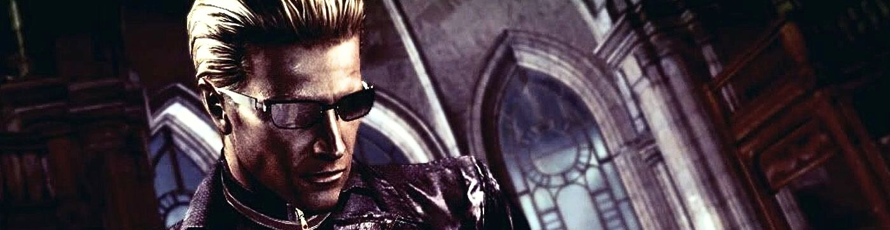

Albert Wesker ist einer der bekanntesten Antagonisten der Resident-Evil-Reihe. Ursprünglich arbeitete er als Captain der S.T.A.R.S.-Einheit in Raccoon City. Allerdings arbeitete er heimlich für die Umbrella Corporation und nutzte seine Position, um Informationen über biologische Waffen zu sammeln.
Im Laufe der Ereignisse verriet Wesker sein eigenes Team und verfolgte seine eigenen Ziele. Durch Experimente mit verschiedenen Viren erhielt er übermenschliche Fähigkeiten. Von diesem Zeitpunkt an begann er, seinen eigenen Plan zu verfolgen: eine neue Weltordnung zu erschaffen, in der nur die stärksten Menschen überleben.
Durch die Experimente mit fortgeschrittenen Viren besitzt Wesker übermenschliche Kräfte. Er ist deutlich schneller und stärker als ein normaler Mensch und kann sich extrem schnell bewegen.
Zusätzlich besitzt er eine außergewöhnliche Regenerationsfähigkeit, die es ihm erlaubt, schwere Verletzungen zu überleben. In Kombination mit seiner Intelligenz, seinem strategischen Denken und seiner Kampferfahrung macht ihn das zu einem der gefährlichsten Gegner in der gesamten Resident-Evil-Serie.
Das Charakterdesign von Wesker ist sehr ikonisch. Besonders bekannt sind seine schwarzen Sonnenbrillen, sein blondes, nach hinten gekämmtes Haar und sein langer schwarzer Mantel.
Die Sonnenbrille verdeckt seine veränderten Augen und verstärkt seine geheimnisvolle und bedrohliche Ausstrahlung. Sein gesamtes Erscheinungsbild wirkt kontrolliert, kühl und überlegen – Eigenschaften, die perfekt zu seiner Persönlichkeit als manipulativer und machtbesessener Antagonist passen.
Albert Wesker gilt als einer der ikonischsten Antagonisten der Resident-Evil-Reihe. Seine Handlungen beeinflussen viele Ereignisse der Serie und stehen oft im Mittelpunkt der Handlung.
Durch seine Verbindung zur Umbrella Corporation und seine eigenen Pläne für die Zukunft der Menschheit hat Wesker eine zentrale Rolle in der Geschichte der Serie. Viele Fans betrachten ihn deshalb als einen der wichtigsten Bösewichte der gesamten Spielreihe.
In diesem Video sieht man einige der bekanntesten Momente von Albert Wesker. Es zeigt seine Fähigkeiten und warum er zu den ikonischsten Antagonisten gehört.